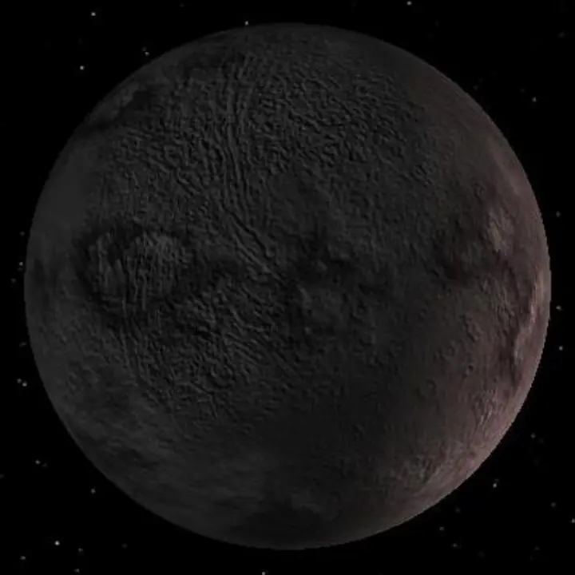

Gliese 581 g — Exoplaneta Candidato

Introdução e História
Gliese 581 g é um exoplaneta candidato, detectado a partir de medições da estrela anã vermelha Gliese 581, localizada a cerca de 20,3 anos-luz da Terra na constelação de Libra.
Foi anunciado em 2010 por análises de velocidade radial, mas sua existência ainda não foi confirmada de forma definitiva, tornando-o um objeto de estudo contínuo e debate na comunidade científica.
Características Físicas: Massa, Tamanho e Órbita
Estima-se que Gliese 581 g tenha uma massa mínima de aproximadamente 3 a 4 vezes a da Terra. Seu período orbital seria de cerca de 37 dias terrestres, mantendo-o potencialmente dentro da zona habitável de sua estrela.
Como ainda não se confirmou a existência, informações sobre raio, composição e atmosfera permanecem incertas.
Potencial de Habitabilidade
- Zona Habitável: Gliese 581 g estaria dentro da zona habitável de sua estrela, onde água líquida poderia existir sob condições ideais.
- Ambiente Desconhecido: Não há observações diretas da superfície ou atmosfera, tornando especulativas suas condições para abrigar vida.
Mesmo como candidato, Gliese 581 g despertou grande interesse por potencialmente estar em uma zona onde vida poderia se desenvolver, caso sua existência seja confirmada.
Curiosidades
Gliese 581 g é considerado um dos primeiros candidatos a exoplaneta potencialmente habitável descobertos em sistemas próximos.
Ele orbita uma estrela que já possui outros planetas confirmados, como Gliese 581 c e d, formando um sistema complexo de estudo.
Por não ter confirmação, todas as imagens disponíveis são artísticas e baseadas em modelos.
Origem do Nome
O nome “Gliese 581 g” segue a convenção astronômica científica: combina o nome da estrela hospedeira (Gliese 581) com uma letra para indicar a ordem de descoberta no sistema. Não há conexão mitológica.
Referências
- Wikipedia. Gliese 581 g. Disponível em: https://pt.wikipedia.org/wiki/Gliese_581_g . Acesso em: 28 dez. 2025.
- Space.com. Whatever happened to the ‘potentially habitable’ planet Gliese 581 g. Disponível em: https://www.space.com/23821-gliese-581g.html . Acesso em: 28 dez. 2025.